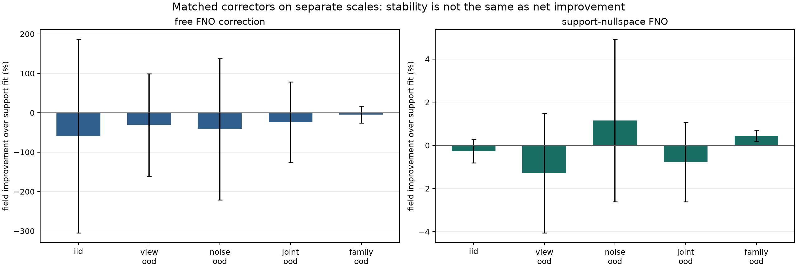
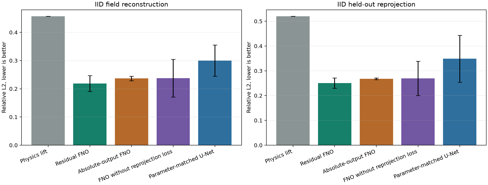
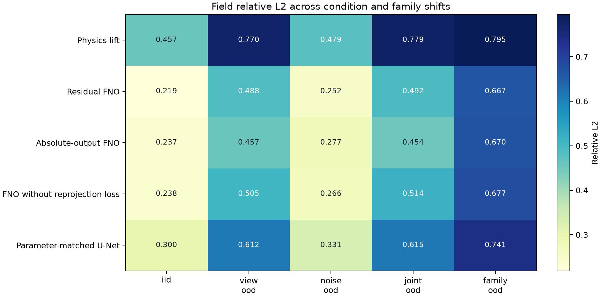
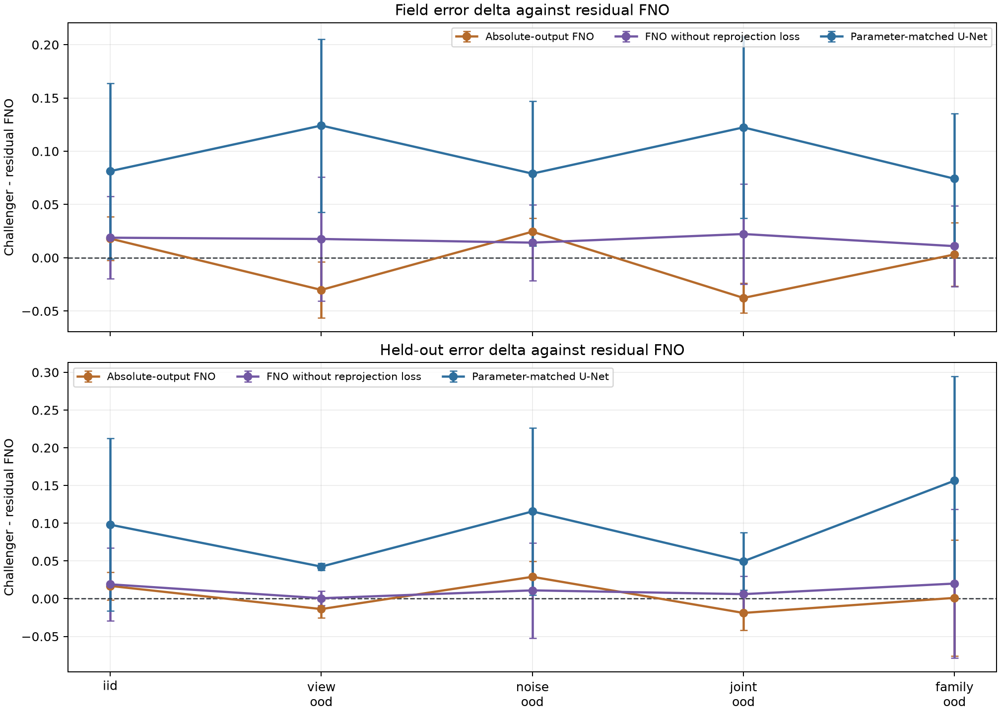
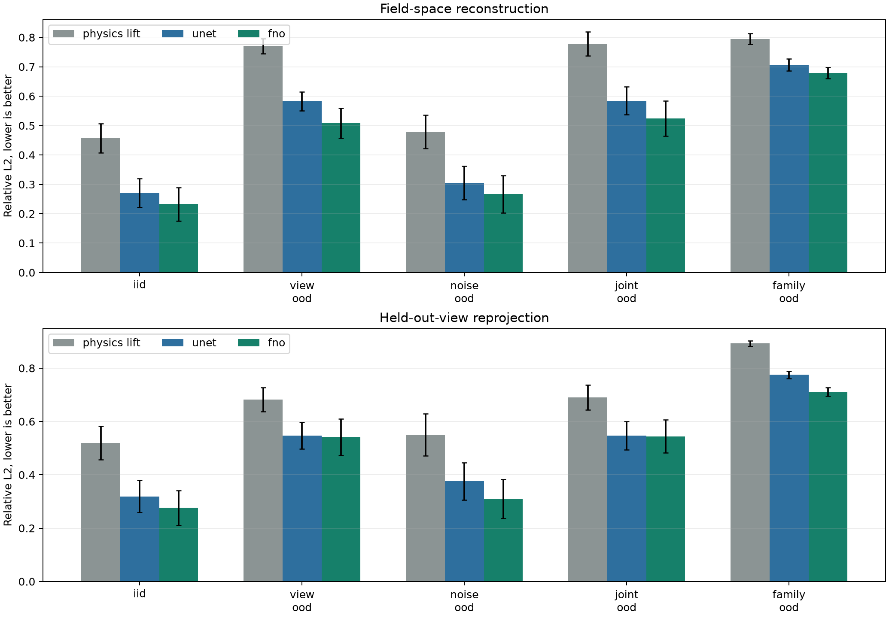
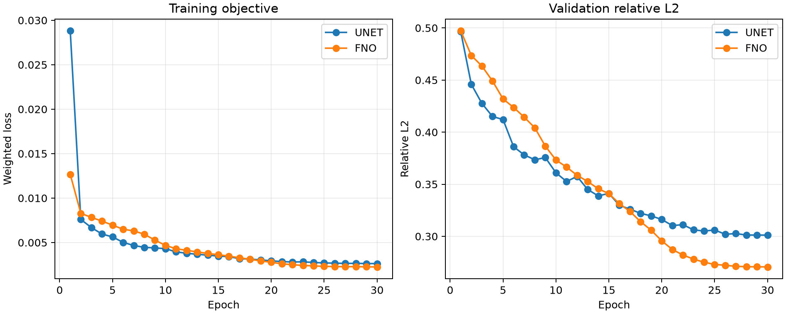
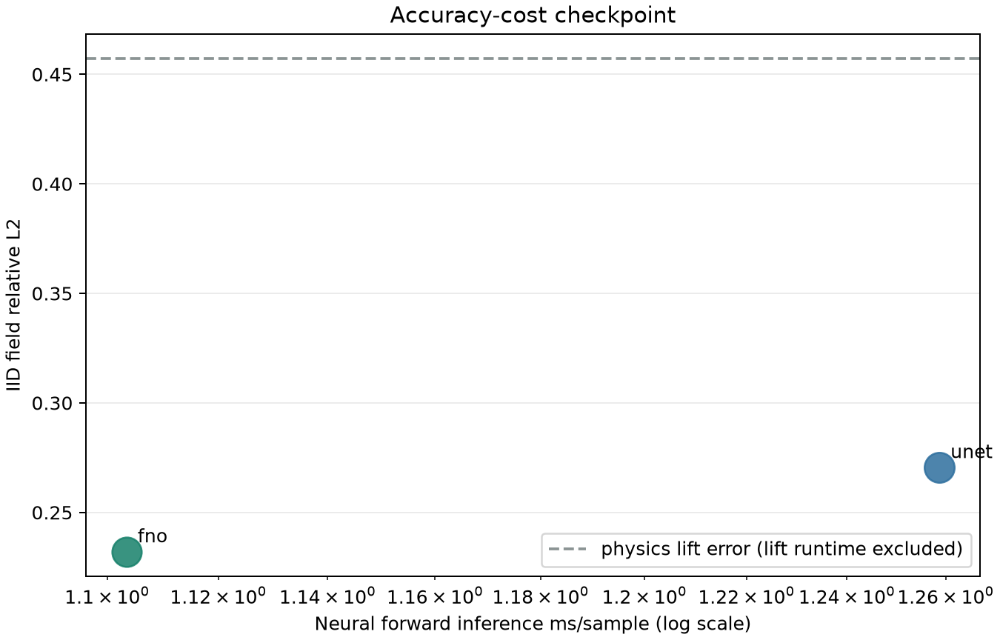
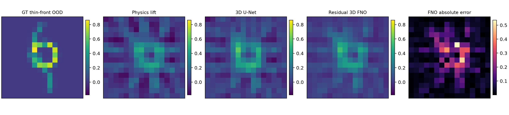

按 condition cell 切分
训练只覆盖预声明的 view/noise 组合；3/9 views 和噪声极端值保留为整格 OOD，不能随机拆散后再叫跨工况泛化。M3B 噪声乘子不是实验单位，真实数据需用 displacement residual 重标定。
把师兄提出的“三维重建”和“算子学习”合成一个可检验的本科课题：学习从多视角 BOS 位移到三维折射率场的跨样本逆算子，同时保留 BOST forward projection 作为物理约束与验收工具。
面向少视角背景纹影层析的强数值底座残差神经算子与 NeRIF 快速物理精化。
v2d 已在 controlled inference 层淘汰 QC-SNCO checkpoint；v3a 按 controlled masks 重训后，ridge-FNO 在 K=4/6/8 三个预算均通过开发门槛，而 FBP-lift FNO 三预算均退化。现阶段只推进 ridge-FNO warm-start NeRIF、独立 forward 和真实 geometry，不继续堆 null corrector。
独立 Residual/Absolute 专家把分支平均差异从约 0.119 提高到 0.190，support-fit 在 79.17% 样本-种子单元达到或优于最佳端点。truth-oracle 审计显示独立 support-fit 仍有 38.626% 平均零空间 headroom；但匹配参数的 learned null corrector 总体 field improvement 为 -0.126%，说明“约束正确”并不等于“方向学对”。


QC-SNCO 当前 checkpoint 已触发停止条件。fixed learned correction 相对 S∪Q direct 在 K=4/6/8 分别为 -20.17%/-13.07%/-15.11%；训练 mask 匹配与独立 forward 仍未完成，因此只把它写成受控 pilot 的路径失败。
固定同一批 168 个三维样本和三个优化种子，比较 Residual/Absolute、固定 view gate、metadata gate、可观测 residual 通道与 observable gate。固定 gate 在 3-view 把 lift 权重降到 0.6，反而令 view OOD field 从 0.488 升到 0.518；metadata gate 的五域 field oracle regret 只从 3.10% 变为 3.08%，held-out regret 从 1.65% 增到 2.00%。


physics-lift 重投影 residual 在 IID 约 0.398、view/joint OOD 约 0.846/0.850，诊断性强；但把它平铺为 3D 常数通道会伤害训练。下一版把它留在低维 router，并让 Residual/Absolute 各自拥有 decoder；路由监督来自 withheld camera，而不是 field truth。
共享双输出 FNO 在 view-dropout 后同时生成 Residual 与 Absolute 场。0.5 等权融合的 IID field 从两端点的 0.2629/0.2612 降到 0.2577，证明两输出可以互补；但 query-trained router 在五域的权重都约为 0.50，field 端点选择准确率只有 40.5%。


独立专家、exact null、matched learned null、adaptive v2c 与 controlled-budget v2d 均已完成并归档为机制证据；v3a 又完成 training-mask-matched direct baselines。当前只保留 ridge-FNO 候选，并转入 locked final fields、独立 forward 与 NeRIF warm-start。
同一批 168 个三维样本固定不变，每个模型用三个独立优化种子训练。误差条是三种子均值的 Student-t 95% 区间，只衡量优化稳定性，不是假装拥有大量独立实验工况。absolute-output FNO 仍接收同一 physics lift，只拿掉输出端 residual skip；它不是 raw projection-to-volume 模型。



| 对照 | 观察证据 | 能支持的判断 | 不能越界的地方 |
|---|---|---|---|
| 43,363-param Residual FNO vs 49,111-param U-Net | Residual FNO 在 15/15 field 与 15/15 held-out seed-domain 汇总单元更低；这些汇总不是 15 份独立物理数据。 | 当前数据/预算下 spectral mixing 值得继续。 | 不等于任意 FNO 普遍优于 CNN。 |
| with vs without reprojection loss | 带物理损失在五域 field mean 均更低，15 个 field 单元中 13 个更好。 | 保留 differentiable BOST consistency，并继续扫权重。 | 三种子区间仍宽，不能写“统计显著”。 |
| residual vs absolute output | Residual 在 IID/noise 三种子全胜；Absolute 在 view/joint 三种子全胜。 | 固定 skip 存在工况依赖，值得做 reliability gate / dual head。 | Absolute 仍使用 lift input，不是 direct raw operator。 |
| family OOD | Residual 0.667、Absolute 0.670，均明显失败。 | 优先补 phantom/真实流态分布与 NeRIF refinement。 | 不能用架构小改动声称跨流态泛化。 |
固定 residual skip 会把 physics lift 原样带进输出；当观测缺失时，absolute branch 可能更稳。后续 dual v1 已证明“从零学 alpha”会塌缩，而 support-view 闭式最小二乘权重更有效。因此下一步不再是自由 gate，而是以物理权重为锚点学受限修正/零空间残差。这同时回应 M3B：先验强度必须随 views/noise/dynamics 工作域变化。
已在本机用 PyTorch 2.13 与官方 NeuralOperator 2.0 跑通完整代码：同一个 BOST forward matrix 负责生成观测与重投影约束；64 train、16 val 和 88 个测试样本严格按工况/phantom family 分层。所有模型只使用一组在训练集拟合并锁定的全局标定，不做逐样本真值对齐。




| 测试域 | Physics lift | 3D U-Net | Residual FNO | 当前判断 |
|---|---|---|---|---|
| IID field | 0.4573 | 0.2706 | 0.2321 | 小型 closure 中 FNO 有效。 |
| 3-view OOD field | 0.7705 | 0.5824 | 0.5081 | 场误差改善，但绝对误差仍大。 |
| 3-view OOD held-out | 0.6822 | 0.5466 | 0.5420 | 改善仅 0.0046；配对 95% CI 跨零。 |
| Noise OOD field | 0.4789 | 0.3054 | 0.2666 | 合成噪声偏移较稳。 |
| Family OOD field | 0.7949 | 0.7069 | 0.6789 | 三者都失败，不能外推真实火焰。 |
三视角和 joint OOD 中，FNO 的 field error 明显优于 U-Net，但 held-out 均值只改善 0.0046 与 0.0024，配对 95% 区间都跨零；joint OOD 还有 7/16 个样本出现 field 更好、held-out 反而更差。这说明 spectral prior 可以让 synthetic truth 上的体场更接近，却不保证真实无真值场景可用的 data-consistency 指标同步变好。下一步应优先做 data-consistency layer、geometry-aware input 或 operator-initialized NeRIF，而不是只增加 modes/width。
M3B 交叉实验先在 80 个 synthetic 环境中证明先验收益会随 noise、views 和 dynamics 联动；新的跨形态 selector又扩展到 864 个观测格，证明 morphology 会把 oracle rank 从 2 推到 full rank。固定 rank 3 mean/p95 regret 为 1.561%/5.635%；组合 support/spectrum/temporal 特征在无 held-out camera 时为 0.252%/1.267%，加入 held-out 为 0.210%/1.054%。T16 因此不能只报告全数据平均 L2，也不能把 held-out residual 直接当 field quality；必须分层 condition/family/geometry，并保留 full-rank/NeRIF 回退。
边界：M3B 的 rank 是 temporal SVD rank，不是 FNO Fourier modes、latent width 或 neural-operator rank。它为 T16 提供的是实验设计、失败案例和未来 temporal-operator baseline，不能直接决定静态 3D FNO 的超参数。
训练只覆盖预声明的 view/noise 组合；3/9 views 和噪声极端值保留为整格 OOD，不能随机拆散后再叫跨工况泛化。M3B 噪声乘子不是实验单位，真实数据需用 displacement residual 重标定。
除 field L2 外，必须报告 held-out view、gradient/边界和至少一个 centroid、mass 或等价积分量，防止“更平滑”冒充“更物理”。
只有静态 T16 跑稳后，temporal operator 才与 framewise、固定-rank SVD 和无真值 selector 公平比较。
| 范式 | 模型学什么 | 新样本如何处理 | 放进你的毕设 |
|---|---|---|---|
| Neural field / NeRIF | 用坐标网络表示一个具体三维场。 | 通常对每个新观测重新优化网络权重。 | 物理主线和高精度 per-instance baseline。 |
| 普通 CNN/U-Net | 固定离散网格之间的有限维映射。 | 一次前向推理，但常绑定训练分辨率和布局。 | 必须做的公平数据驱动 baseline。 |
| Neural operator | 函数空间之间的映射，例如观测场到三维物理场。 | 一组共享参数处理训练分布内的新实例。 | T16 主模型，重点检验跨 phantom/view/noise/resolution 泛化。 |
| PINN/PINO | PINN 多为单实例解函数；PINO 学一族问题的解算子并加入物理约束。 | 取决于是否预训练 operator 和是否 test-time optimization。 | 第一阶段只加 BOST forward loss，不急着加入 Navier-Stokes。 |
z0 = A_g* d or fixed-budget SIRT(d, g) alpha = gate(view coverage, geometry, residual statistics) n_hat = alpha * z0 + FNO_theta([z0, sampling_density, valid_mask, metadata]) d_hat = A_g(n_hat) L = lambda_field L_field + lambda_grad L_grad + lambda_proj L_reprojection + lambda_bc L_boundary
切换路线查看最适合的输入、研究问题和停止条件。
规则三维 physics lift 解决观测布局；gate 根据 view/geometry/residual 调节 skip，FNO 同时具备残差修正和绝对场分支。
能写清输入函数空间、输出函数空间、传感器采样、query coordinate 和 discretization invariance。先读 JMLR 总论，不必一开始证明定理。
FNO 不是直接吞任意视角列表。最有研究价值的设计是 geometry-aware adjoint/SIRT lift、采样密度和有效 mask channel。
训练/测试按 phantom family、视角、噪声和分辨率隔离；参考 M3B 把完整 condition cell 留作 OOD，而不是只随机拆 seed。数据分布设计比多堆两层网络更决定论文可信度。
优先使用 BOST reprojection、boundary 和 gradient loss。没有速度/压力边界条件时，不要为了“物理”强行上 Navier-Stokes。
FNO 的 resolution transfer 是待验证假设，不是免费属性。必须与 U-Net、插值和传统重建公平比较。
从 2D 和 24^3 起步，记录 batch、modes、width、显存、训练/推理时间。超过预算时使用 TFNO、patch 或 3D-stack 降级。
读函数空间、discretization invariance、FNO/GNO/low-rank operator 分类。它是概念总地图。
解释 operator-to-function inverse map，最适合支撑“BOST 观测算子到折射率函数”的题目表述。
学习 data loss 与 physics loss 如何联合。T16 先把 physics 定义成 BOST forward projection。
稀疏观测到完整流/热场、三种 sparse embedding、resolution transfer，最接近本科主模型。
包含 Schlieren 和 3D turbulent jet 数据，提醒你 operator learning 必须面对稀疏、噪声、传感器缺失和真实测量。
只有观测和可信 forward model、缺少三维标签时的进阶参考；第一版不能直接照搬其 PDE 稳定性假设。
当 24³/32³ 已证明有价值、显存成为主要瓶颈后，再考虑 tensorization 与 multi-grid decomposition。
直接的 BOST 神经重建邻居；提取输入投影序列、3D ray matrix、实验验收和推理时间，不把 GRU 自动等同 4D operator。
顺序按你的任务编排，不按模型流行度编排。先完成“会验收逆问题”，再升级架构。
先跑官方 Darcy FNO，再读 N-D FNO API、Lp/H1 loss、grid embedding 和 TFNO。当前 T16 已用同一官方包完成 3D forward/train。
官方页面同时提供 operator learning、DeepONet、FNO/CNO 的 lecture、slides 与 tutorial code；优先看 Introduction to Operator Learning、Deep Operator Networks、Neural Operators、FNO/CNO 四讲。
来源为 MathWorks 中国官方账号，适合先建立中文术语和总体图景；它使用 MATLAB 演示，不能替代本项目的 PyTorch/NeuralOperator 代码练习。
已经把向量微积分、逆问题、PyTorch 3D、FNO/DeepONet、物理一致性和 OERF 对接拆成五级过关产物。
先用视频建立结构，再回到论文公式和本地代码逐项核对。每看完一讲必须留下一个可运行 notebook/script、一张 shape/loss 图和一个失败解释；只看完播放列表不算学习产出。
| OERF/Cai 论文 | 已经做了什么 | T16 可继承什么 | 不能夸成什么 |
|---|---|---|---|
| NTAS CNN, 2018 | 从有限投影/sinogram 快速预测温度与浓度。 | paired data、projection-to-field、速度与噪声评估。 | 它不是 DeepONet/FNO 神经算子。 |
| 3D flame evolution, 2019 | 从历史二维投影快速预测三维火焰演化。 | 时序输入、三维输出、在线推理和课题组需求语言。 | 它不是 T16 的 BOST inverse operator。 |
| Limited-projection VT, 2020 | 少投影三维火焰重构与 ART 对照。 | 最接近 OERF 内部 projection-to-volume 前史。 | CTC emission physics 不等于 BOST deflection physics。 |
| kHz 3D flame, 2020 | 低速 2D 记录到高帧率 3D 序列。 | 时序超分辨和硬件/计算成本共同优化。 | 不能直接当作 FNO 或 4D BOST baseline。 |
| NeRIF, 2025 | 用连续坐标场和 BOST forward loss 重建折射率。 | 给 T16 提供物理量、forward operator、边界和评价。 | Neural field 不等于 neural operator。 |
算子学习“相对容易”的是模型原型，不是可信的三维成果。真正的工作量在批量 paired data、显存、训练/测试分布和物理验收。最值得做的不是再发明一个名字，而是证明 physics lift、operator architecture 和 reprojection loss 各自在哪些视角/噪声/分辨率条件下有用或失败。